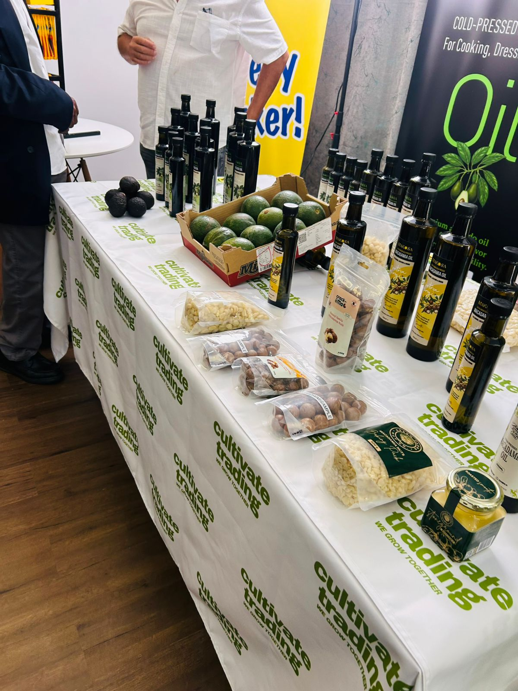
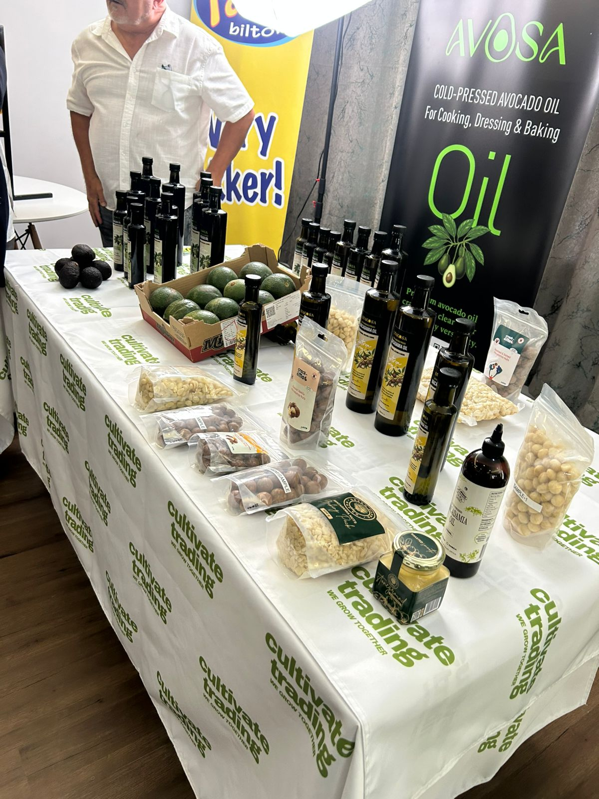

Rural Investment Summit
Ravele Royal Farming Enterprise Explores Rural Investment Pathways
Rural development is strongest when conversations move beyond speeches and into practical partnerships. For Ravele Royal Farming Enterprise, the Rural Investment Summit created exactly that kind of opening.
Founder Mpho Ravele attended the summit with a clear interest in meeting people who understand the investment potential of rural areas. The event brought together voices focused on traditional leadership, community growth, infrastructure, enterprise development, and the agricultural value chain. In that environment, Ravele Royal Farming Enterprise was able to position its farming work within a wider conversation about how rural economies can become more productive, investable, and connected to market demand.
For a farm rooted in fresh produce, the summit was more than a networking platform. It was a place to test ideas, listen to people already building rural-facing enterprises, and explore how farmers can move from primary production into stronger commercial relationships. That matters because agriculture in rural communities often needs more than land and harvests. It needs buyers, processing partners, logistics, governance, and the kind of investor confidence that turns seasonal output into long-term growth.
A fruitful conversation with Cultivate Trading and AVOSA
One of the meaningful moments from the summit was Mpho Ravele's engagement with Cultivate Trading and AVOSA. The meeting was especially relevant because Ravele Royal Farming Enterprise already works with avocado production, while AVOSA represents a value-added path for avocado-based products.
Public information from Cultivate Trading describes the company as a White River, Mpumalanga-based avocado oil processing business that is developing a modern facility to support local avocado growers. The same platform presents AVOSA as its cold-pressed avocado oil brand, designed for everyday uses such as cooking, dressing, and baking. That connection made the conversation feel naturally aligned with Ravele Royal Farming Enterprise's interest in moving beyond raw produce supply and into partnerships that can unlock more value from farm output.
Why value-added agriculture matters
The AVOSA display showed how a crop can become a broader product story. Bottled avocado oil, macadamia products, fresh avocados, and packaged goods all point to the same lesson: rural farms can strengthen their position when they connect production with processing, branding, packaging, and distribution. For communities, that can mean more than a single sale. It can mean jobs, supplier relationships, enterprise skills, and a clearer reason for investors to pay attention.
Ravele Royal Farming Enterprise's produce portfolio already includes avocados alongside bananas, litchis, chillies, cabbage, maize, and other crops. A conversation with a value-added avocado oil brand therefore opens a practical line of thinking: how can farms become part of more complete agricultural ecosystems, from orchard to shelf?


A conversation captured on video
The short clip from the event captures the kind of direct, relationship-led exchange that can shape future opportunities. These moments are important because partnerships often begin with a clear conversation: what the farm produces, what a processor or market partner needs, and where both sides can build something with shared benefit.
Looking ahead
The meeting with Cultivate Trading and AVOSA may lead to something significant, but even at this early stage it reflects the direction Ravele Royal Farming Enterprise is pursuing: agriculture that is practical, partnership-driven, and connected to rural economic development. For farmers, investors, and community leaders, the opportunity is not only to grow produce. It is to grow systems that keep more value closer to the communities that cultivate it.
External context
AVOSA and Cultivate Trading background was informed by Cultivate Trading's public information on its avocado oil facility, product range, and AVOSA brand: Cultivate Trading overview, AVOSA brand page, and Cultivate Trading about page.